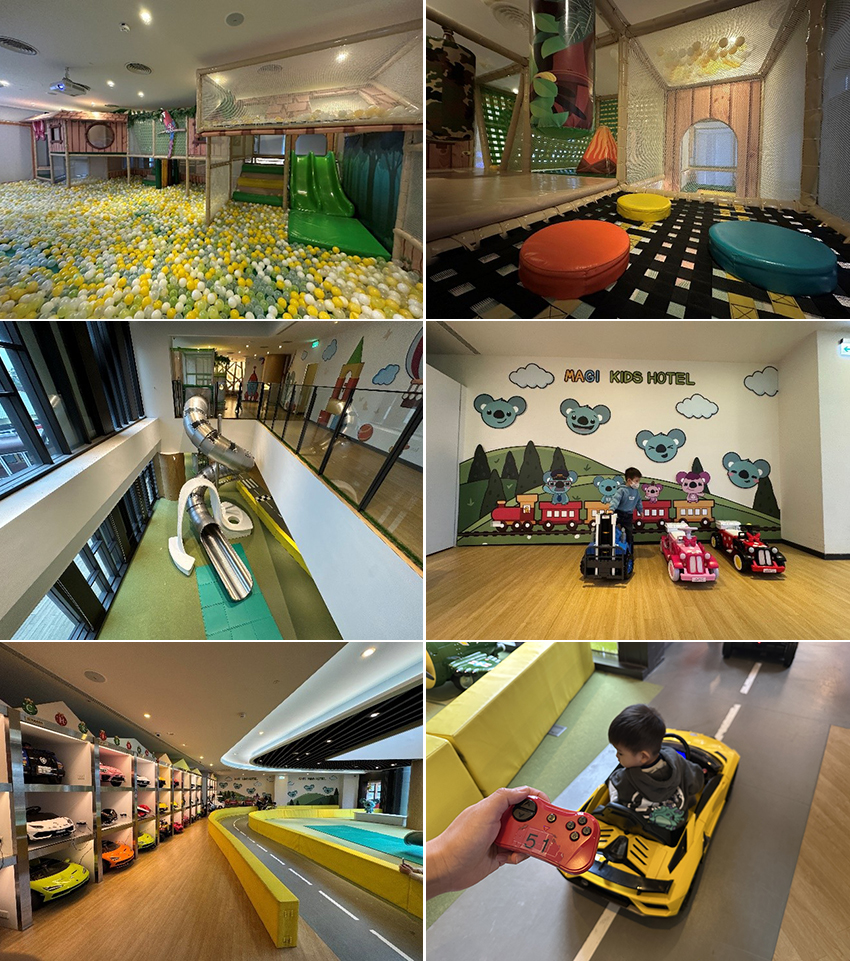

自從雪隧通車後，台北到宜蘭變得超級方便，但假日若沒早點出門，通常會遇上塞車。有了小孩後，我們前往宜蘭的次數變得更多，因為這裡無論是室內或戶外，都有許多適合親子的超好玩景點。
這次要推薦的是專為0-8歲親子打造的「雀客童媽吉親子旅館」。旅館外觀造型吸睛，距離羅東火車站不到200公尺，無論是自行開車或搭乘火車、客運前往都十分便利。這裡的兒童遊戲室超級豐富，不僅有球池、大型溜滑梯，還有電競遊戲室，更令人驚喜的是小汽車遊樂區，讓小朋友可以開著迷你跑車在室內賽道奔馳！選擇住在這裡，根本不需要額外安排行程，光是在遊戲室就能玩上一整天。
入住當天下午1:30即可進入遊戲室，店員會提供一張闖關卡，讓孩子透過完成小任務來收集印章，最後還能兌換小禮物，小朋友都超喜歡這個活動。下午時段，飯店還會提供迎賓點心與下午茶，此外，還有小朋友體驗當小小廚師的DIY活動，例如搓湯圓，完成後真的會送進廚房煮熟，讓大家品嚐自己親手做的美食，這樣的體驗十分難得，小朋友都超開心呢！
小汽車遊樂區擁有專業的室內賽車跑道，採預約登記制，現場提供各種迷你名車任君挑選，若孩子年紀較小，也能選擇有遙控器的車款，讓家長輔助操控。我們這兩天玩了超多次，因為相較於其他飯店需要額外付費，這裡竟然可以無限次數暢玩，當然要玩好玩滿！
|  |
等到下午4點就能進房入住，我們這次選擇的是標準四人房，房內裝潢溫馨舒適，還有一個小陽台。浴室空間寬敞，甚至可以讓小朋友把浴缸當作小型泳池，在房內也能享受玩水的樂趣。
晚餐時間，我們想帶孩子體驗在地夜市美食，店員推薦我們前往附近的清溝夜市。這裡的夜市街道超長，各式美食應有盡有，可惜當天遇到天候不佳，沒能逛完全部，期待下次再訪補足這次的遺憾。
隔天早餐選擇多樣化，無論是大人或小孩，都能吃得飽足滿足。整體而言，這次入住雀客童媽吉親子旅館的體驗非常棒，不僅設施完善、活動多元，還能讓孩子盡情放電。下次來宜蘭，我們一定會再訪！